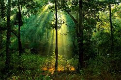

Inspirational Safaris in India & Africa
Inspirational Safaris in India & Africa

India is not only famous for its diverse wildlife, architectural marvels and culture, but also for its dense and vast forest cover. Indian climate befits the variety of flora and fauna.
Forest is the second largest land use in India next to agriculture. The forest cover of India is assessed as 67.83 million hectares which constitute 20.64 per cent of the country's geographical area, ranging from the Himalayan Temperate to Dry Zone forests. The National Forest Policy stipulates that one-third of area should be under forest or tree cover. Being a mega-bio diversity country, the nation possesses high level of endemism.
The forests play vital role in harboring more than 45,000 floral and 81,000 faunal species of which 5150 floral and 1837 faunal species are endemic. The nation has established 597 Protected Areas comprising 95 National Parks, 500 Wildlife Sanctuaries, 2 conservation reserves covering 1.56 million ha area or 4.75 per cent geographical area of the country. The rising demand for forest based products and resultant deforestation and encroachment has led to a severe loss of natural resources and destruction of habitat.
India is likely to face severe shortage of supply of timber to meet its requirement from both domestic and international front. It is estimated that the demand for timber is likely to grow from 58 million cubic metres in 2005 to 153 million cubic meters in 2020. The supply of wood is projected to increase from 29 million cubic meters in 2000 to 60 million cubic meters in 2020. As a result, the nation has to heavily depend on imports for meeting its growing demand. This could result in loss of high conservation value forests or loss of biodiversity else where.
The Living Planet Report 2006 ranked India as the third highest gross foot print nation, followed by US and China. India is presently 4th largest economy in terms of purchasing power parity and is growing at 8-9 per cent per annum. This fast growth coupled with the needs and aspirations of more than one billion people is a challenge for conservation of forests unless environmentally responsible policies are in place. In this regard, the new strategy document of the Forest programme incorporated innovative approaches such as Payment for Forest Ecosystem Services (PES), Ecological Footprint Analysis and Forest Certification.
The identified priority landscapes for field level activities for strengthening conservation of forests and biodiversity are Western Arunachal Landscape (WAL) in Eastern Himalayas and South Western Ghats, Landscape (SWG L) in the Western Ghats. Besides, the programme continues to provide inputs and support to conservation programmes in other priority landscapes of WWF-India, including Terai Arc Landscape, Kanchanjunga Landscape, Sundarbans landscape.
The forests of India can be classified into several types. These are- Taiga type (consisting of pines, spruce, etc.) the mixed temperate forests with both coniferous and deciduous trees, the temperate forests, the sub tropical forests, the tropical forests, and the equatorial rainforests. But there are mainly six groups of forest in India which are- moist tropical, dry tropical, montane sub tropical, montane temperate, sub alpine and alpine.
These forests have a great relation with the surrounded atmosphere. The range of forest of India is very diverse. We can find here from the rain forest of Kerala in the South to the alpine pastures of Ladakh, from the desert of Rajasthan in the west to the evergreen forest in the North East.
India is not only famous for its diverse wildlife, architectural marvels and culture, but also for its dense and vast forest cover. Indian climate befits the variety of flora and fauna.
Forest is the second largest land use in India next to agriculture. The forest cover of India is assessed as 67.83 million hectares which constitute 20.64 per cent of the country's geographical area, ranging from the Himalayan Temperate to Dry Zone forests. The National Forest Policy stipulates that one-third of area should be under forest or tree cover. Being a mega-bio diversity country, the nation possesses high level of endemism.
The forests play vital role in harboring more than 45,000 floral and 81,000 faunal species of which 5150 floral and 1837 faunal species are endemic. The nation has established 597 Protected Areas comprising 95 National Parks, 500 Wildlife Sanctuaries, 2 conservation reserves covering 1.56 million ha area or 4.75 per cent geographical area of the country. The rising demand for forest based products and resultant deforestation and encroachment has led to a severe loss of natural resources and destruction of habitat.
India is likely to face severe shortage of supply of timber to meet its requirement from both domestic and international front. It is estimated that the demand for timber is likely to grow from 58 million cubic metres in 2005 to 153 million cubic meters in 2020. The supply of wood is projected to increase from 29 million cubic meters in 2000 to 60 million cubic meters in 2020. As a result, the nation has to heavily depend on imports for meeting its growing demand. This could result in loss of high conservation value forests or loss of biodiversity else where.
The Living Planet Report 2006 ranked India as the third highest gross foot print nation, followed by US and China. India is presently 4th largest economy in terms of purchasing power parity and is growing at 8-9 per cent per annum. This fast growth coupled with the needs and aspirations of more than one billion people is a challenge for conservation of forests unless environmentally responsible policies are in place. In this regard, the new strategy document of the Forest programme incorporated innovative approaches such as Payment for Forest Ecosystem Services (PES), Ecological Footprint Analysis and Forest Certification.
The identified priority landscapes for field level activities for strengthening conservation of forests and biodiversity are Western Arunachal Landscape (WAL) in Eastern Himalayas and South Western Ghats, Landscape (SWG L) in the Western Ghats. Besides, the programme continues to provide inputs and support to conservation programmes in other priority landscapes of WWF-India, including Terai Arc Landscape, Kanchanjunga Landscape, Sundarbans landscape.
The forests of India can be classified into several types. These are- Taiga type (consisting of pines, spruce, etc.) the mixed temperate forests with both coniferous and deciduous trees, the temperate forests, the sub tropical forests, the tropical forests, and the equatorial rainforests. But there are mainly six groups of forest in India which are- moist tropical, dry tropical, montane sub tropical, montane temperate, sub alpine and alpine.
These forests have a great relation with the surrounded atmosphere. The range of forest of India is very diverse. We can find here from the rain forest of Kerala in the South to the alpine pastures of Ladakh, from the desert of Rajasthan in the west to the evergreen forest in the North East.
These type of forests are available in the area where there is around 100 to 200 cms annual rainfall. The deciduous is also divided into two category: moist and dry. Except the western and north western region these type of forest can be found most parts of India.
They are found on the lower slopes of the Siwalik Hills from Jammu to the West Bengal in the east. These forests include trees like sal and teak, mango, bamboo and rose wood. The dry deciduous forests are available in the Northern and Southern part of the India except in the North East. Madhya Pradesh, Gujarat, Andhra Pradesh, Karnataka and Tamil Nadu are home to dry deciduous forest, which include sandalwood, khair, mahua, mango, jackfruit, wattle, bamboo, semal, sisasm, arjun, sisam etc.
The Dry deciduous forests are found throughout the northern parts of the country. These provide shelter to many animals, reptiles, mammals, insects, birds and so many other things. The vast range of national park and wild life sanctuaries in India bear the witness of the rich lush green forest of India. For better crops and more rainfall more forest is always required. But now a days deforestation is one of the acute issue of global warming. So, the Government of India has a special measure for plantation of trees to cater this issue.